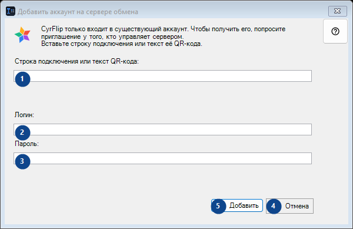
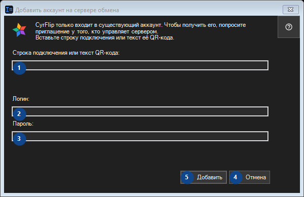

Добавить аккаунт на сервере обмена
Для чего это окно
Прочитайте пояснения к номерам, выберите нужные значения и продолжите командой окна.


Порядок действий
Прочитайте пояснения к номерам, выберите нужные значения и продолжите командой окна.
Элементы
1. Строка подключения или текст QR-кода:
Выберите или введите значение для соседней подписи. Проверьте его перед продолжением.
Ваши сочетания клавиш2. Строка подключения или текст QR-кода:
Выберите или введите значение для соседней подписи. Проверьте его перед продолжением.
Ваши сочетания клавиш3. Строка подключения или текст QR-кода:
Выберите или введите значение для соседней подписи. Проверьте его перед продолжением.
Ваши сочетания клавиш4. Отмена
Используйте команду, когда нужно указанное действие. Прочитайте запрос подтверждения перед согласием.
Ваши сочетания клавиш5. Добавить
Используйте команду, когда нужно указанное действие. Прочитайте запрос подтверждения перед согласием.
Ваши сочетания клавиш